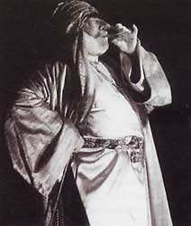
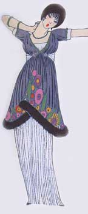
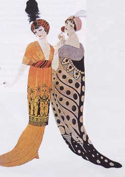

|
 |
Поль
Пуаре
- новатор моды начала XX века, истребитель корсетов. Король "прекрасной
эпохи".
|
|
|
 |
Хозяин
одалисок Творчество Пуаре приходится на начало века, а это - расцвет модерна в Европе. Модерн был не просто очередным модным направлением искусства: он захлестнул все сферы жизни, нашел свое отражение в живописи, литературе, музыке. Он привнес радость и цвет в женскую моду. Женщины поменяли черные унылые платья на красочные восточные наряды, что предложил им Пуаре. Как писала одна парижская газета того времени: "Одалиски из гарема Пуаре вызвали такой восторг у наших дам, что теперь даже почтенные супруги высокопоставленных лиц, кажется, готовы бросить все и отправиться к турецкому султану, лишь бы иметь возможность так одеваться". |
 |
| Платье Пуаре. Рисунок Жоржа Лепапа для журнала "Gazette du Bon Ton". | У Пуаре. Фрагмент рисунка Жоржа Барбье. 1912 г. | |
| Русские
сезоны Поль Пуаре родился в семье парижского портного в апреле 1879 года. Как и на многих известных дизайнеров, в детстве на Пуаре огромное впечатление произвел театр. Пуаре в своих мемуарах "Одевая эпоху" подтверждает, что русское театральное искусство и живопись Бакста оказали на него огромное влияние. Лев Бакст - художник "русских сезонов" - делал свои спектакли на основе стилизации восточных и античных мотивов. То же самое делал Пуаре, только - в жизни. Подобно Готье - воскресителю корсета, который, будучи маленьким мальчиком, разряжал в пух и прах своего медвежонка Нана, истребитель корсета Пуаре воплощал свои первые дизайнерские фантазии на куклах своей сестры. А также рисовал эскизы одежды и рассылал их известным кутюрье того времени. |
||
| Эпатаж
в хороших тонах Свою карьеру Пуаре начинал, подрабатывая подмастерьем у изготовителя зонтиков. Удача пришла к нему в одночасье - в 1896 году. Жак Дусе, один из самых влиятельных кутюрье начала века, увидел эскизы Пуаре и пригласил его работать к себе. Пуаре согласился, но проработал там недолго: характером он обладал упрямым и имел свое, совершенно бескомпромиссное, представление о том, какой должна быть одежда. Его новаторские идеи не вполне вписывались в консервативную, устоявшуюся политику Дусе. Но именно во время работы у Дусе к Пуаре пришла известность: в это время он создавал костюмы для ведущих театральных актрис, в том числе - для легендарной Сары Бернар. Затем Пуаре работает у Ворта, но вскоре покидает и его. Настоящая слава к Пуаре пришла, когда в 1904 году, взяв в долг деньги у матери, он открывает свой дом. Сюда стягиваются дамы, жаждущие ярких красок, уставшие от чопорности и "кандалов" классических нарядов. К 1912 году известность Пуаре так велика, что он открывает в Париже свое ателье и школу. Тогда же Пуаре учреждает самый эпатажный журнал того времени - "Журнал хорошего тона", провозглашающий новую эру понимания красоты и манеры одеваться. |
||
| Ошибка
Пуаре Многое из того, что составляет половину модного ныне гардероба, - дело фантазии Пуаре. Он первый из европейских дизайнеров обратил взгляд на Восток и одел парижанок в широкие штаны наложниц гарема. Украсил их наряды персидской вышивкой, а на головы водрузил восточные тюрбаны из меха и парчи. Пришествие кимоно в европейскую моду - тоже дело рук Пуаре. Существует версия, что Пуаре сделал кимоно в качестве подарка Дягилеву: в то время шла японская война, и дизайнер, будучи не особенно в курсе, что именно происходит, решил, что его русскому другу будет приятно получить на память этот стилизованный японский наряд. Пуаре также считается изобретателем современного бюстгальтера, упоминание о котором впервые появилось в американском журнале "VOGE" в 1907 году. Нововведения Пуаре не ограничиваются только изобретением одежды. Можно сказать, что он придумал модное дефиле как таковое: Пуаре был первым, кто продемонстрировал свою одежду на живых моделях, а не на манекенах. Еще он выпустил свой парфюм. Духи назывались "Розин", по имени дочери Пуаре. Они не особенно выделялись среди моря подобных цветочных ароматов, но вошли в историю как первый парфюм, выпущенный дизайнером. После Пуаре это стало традицией. Один только дом "Кристиан Диор" выпустил за свою историю семь парфюмов. |
||
|
Убийца дракона Безусловно, главным достижением Пуаре была победа над корсетом. Война против этого "изуверства" велась уже довольно давно. Против него возражали и врачи, и творческая интеллигенция. У них были на то веские причины. Первый же аппарат УЗИ показал, что корсет деформирует не только линию талии, но и внутренние органы женщины. К тому же уродует и искажает естественную линию женского тела. Но прекрасная половина Европы не внимала всем этим доводам и по-прежнему жила под девизом "хоть дрожу, но фасон держу". Корсет - явление моды, и поэтому его могло победить только другое явление моды. Что и произошло. Пуаре изменил стереотип прекрасного женского силуэта и вместо осиной талии предложил рубашечный крой и яркие краски. Врачи глазам своим не поверили: дамы в одночасье побросали свои корсеты и переоделись в штаны наложниц гарема, туники и кимоно. |
||
| Финал Пуаре был на гребне славы до конца Первой мировой войны. После войны сознание людей и мода изменились, а Пуаре меняться не пожелал: его модели оставались по-прежнему яркими, но для послевоенной Европы казались слишком вычурными. Слава оставила его. В 1927 году предприятие в Париже пришлось закрыть. А в 1944 году реформатор моды XX века умер от болезни, в нищете. Мода стала двигаться от пышной к более практичной. |
||